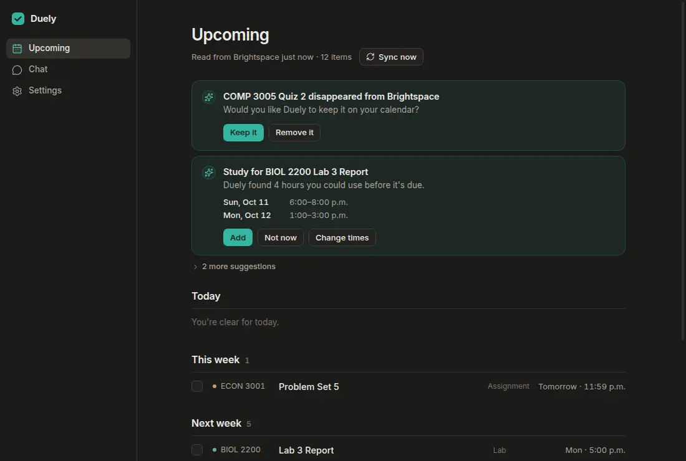
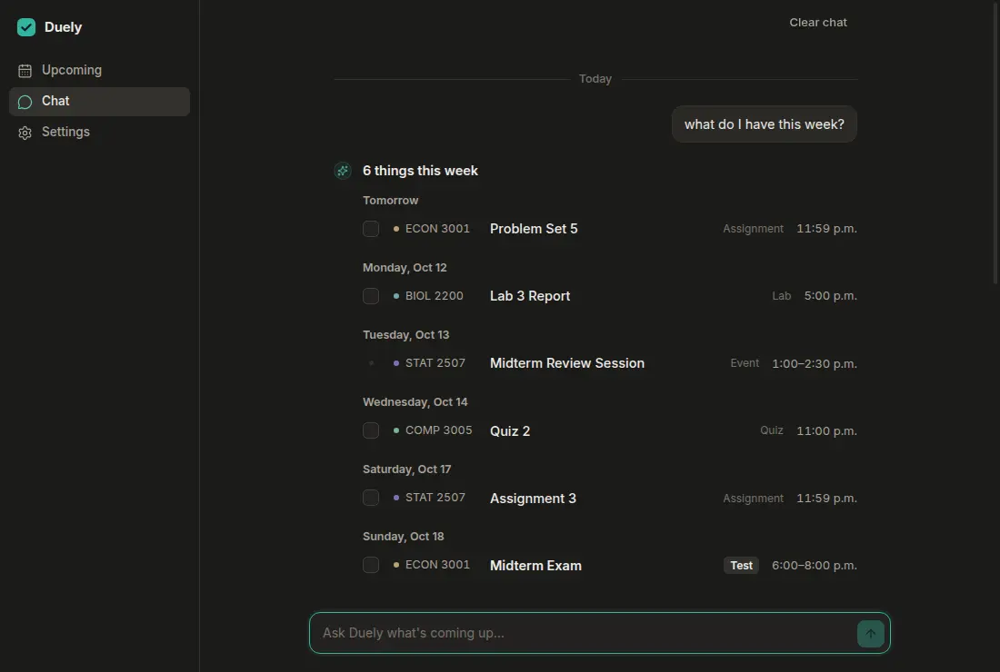
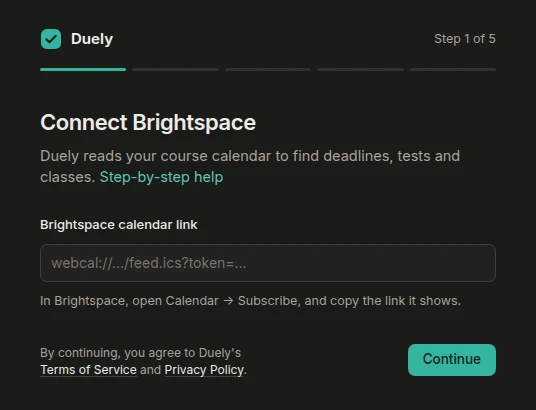
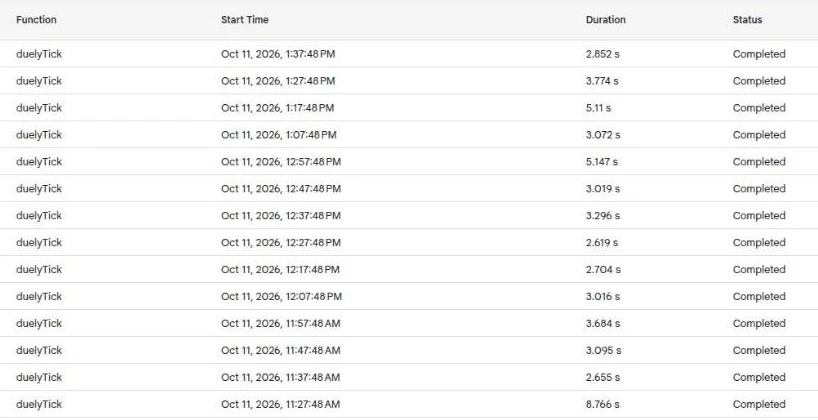
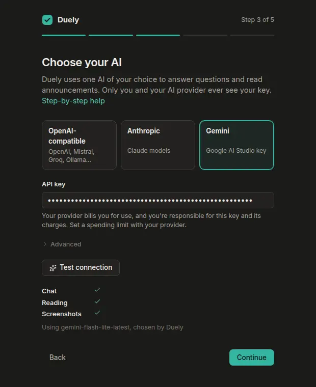
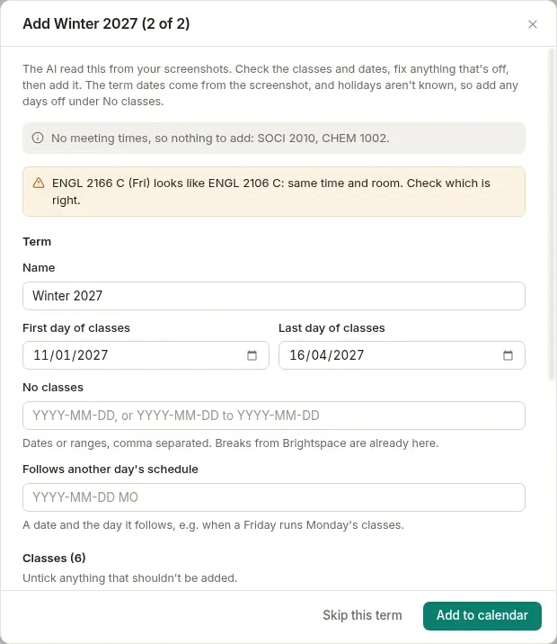
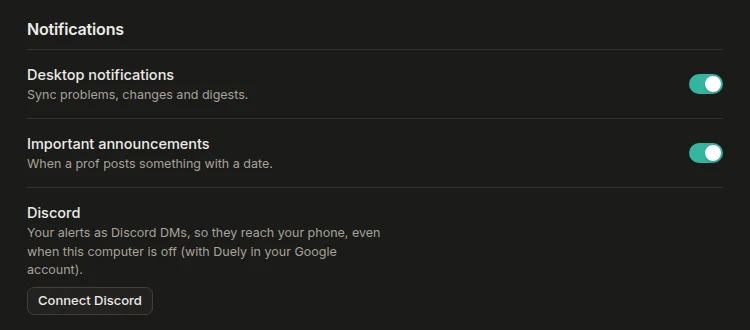

Brightspace lists every quiz three times and never mentions the midterm your prof moved in an announcement. Duely turns that feed into a Google Calendar you can trust. It runs inside your own Google account, so it keeps syncing after the laptop's closed, and it uses whatever AI you bring.
It's a beta and isn't code-signed yet. On Windows, click More info → Run anyway; on a Mac, use System Settings → Privacy & Security → Open Anyway. Then follow the setup guide.
Brightspace's calendar feed is noisy. Every quiz shows up three times (opens, closes, due), course content "becomes available" every week, and when a prof moves a midterm it's usually only in an announcement. I built a version for myself first. It only worked for me: my school, my Google project, my API key. Friends kept asking for it, so Duely is the same engine pulled apart and rebuilt so anyone can install it, without a server of mine sitting in the middle.


Why The sync engine was already written in TypeScript, and it's the part with all the fiddly logic, like merging the three copies of every quiz. It now has to run on the desktop and inside Google Apps Script. I didn't want two versions of that logic slowly disagreeing with each other, so it stayed one codebase.
The struggle Apps Script isn't Node and it isn't a browser. There's no fetch, Intl, URL, timers or Web Crypto. Losing Intl hurt the most, because every time zone calculation in the engine went through it.
The fix Anything the engine needed from its host went behind a small interface, and each side plugs in its own version: Node's on the desktop, Utilities and UrlFetchApp in Apps Script. The build squashes it all into one ~130 KB file. Then a test runs that file in a sandbox with those globals deleted and compares its calendar against the desktop's. One event off and the test fails.
Why Students are on Windows and Macs, and I'm on Linux. Electron runs the TypeScript engine as is, so one codebase covers all three.

The struggle None of the bugs here crashed. They just quietly didn't work. The preload script got built as an ES module, which Electron won't load in a sandbox, so the window had no connection to the app and no error to say so. On Linux desktops with no notification service, each notification froze the app for about 25 seconds. And on Linux with no keyring, Electron can't encrypt saved keys at all.
The fix Since none of them announced themselves, I added a check for each. The packaged app gets a smoke test on Windows, macOS and Linux in GitHub Actions before a release is even drafted, and it fails if that connection is missing. Duely asks D-Bus whether anything is listening before it sends a notification. Without a keyring it still runs, but it tells you your keys are only lightly protected, and if you install one later it moves the keys over on its own.
Why A desktop app only syncs while it's open. The normal answer is a server, but then I'm paying every month and sitting on everyone's calendar access and AI keys, which I really didn't want. Apps Script runs code on a timer inside the student's own Google account. It's free, and only they can see it.

The struggle Getting the desktop app to talk to the script was harder than it should be. The obvious way, a private web app, refuses the call unless the student also gives Duely access to their Google Drive. That's way too much to ask for a calendar app. The Calendar API failed too, with a 403, because the script lives in a hidden Cloud project where it isn't turned on. And one stray reference to Node's process sailed through every test and only crashed once it ran in Apps Script for real.
The fix The web app accepts anonymous calls but ignores anything without a 256-bit key that only the student's desktop has (compared in constant time). Calendar writes go through Apps Script's built-in Calendar service instead. I also made the script the only thing that ever writes to the calendar. Tick something off in the app and it goes into an inbox the script reads on its next run, so the two can't fight over an event. A full sync takes under six seconds, or about two when nothing changed.
Why It's already on everyone's phone. Duely asks for the narrowest permission Google has, calendar.app.created, which means it can only see the one calendar it made. Your other calendars are invisible to it.
The struggle Each student sets up their own Google sign-in client, and Google logs a client in "Testing" out every seven days. The usual advice is to publish it, but that means filling in Google Cloud's branding forms first, which is a lot to ask of someone who just wants their deadlines.
The fix So I checked what the sign-in is used for. Once the script is installed it runs on its own authorization, and the desktop only needs Google again when an update has to replace the script. Now an expired sign-in just waits for a one-click Reconnect, and syncing carries on in the meantime.
Why I can't pay for everyone's AI calls, and I didn't want their keys either. So you bring one: OpenAI, Anthropic, Gemini (free tier included), Mistral, Groq, or a model on your own computer. Duely talks to OpenAI-compatible APIs, Anthropic and Gemini, and the key stays on your machine and in your Google account.

The struggle Model names change constantly, and nobody should need to know what gemini-flash-lite-latest means. The nastier problem only showed up when I ran the test set against a real model. Newer Gemini models reject a conversation unless every tool call comes back with its "thought signature", and Duely was dropping it. Any question that needed a second step silently fell back to the rule-based answers. From the outside it looked fine, and I'd have gone on thinking the AI was doing the work.
The fix Duely now asks the provider which models your key can use and picks a small, fast one, skipping any that are overloaded or gone. With the signature passed back, the live score went to 148 out of 150. Answers also get checked against the calendar before you see them, and if the AI mentions a date or item that isn't there, it has to try again. When the AI is down, the rule-based parser takes over. It gets all 811 questions in my test set right.

Why If a prof moves a test while your laptop is shut, a desktop notification won't reach you. A Discord DM will, and connecting it is one sign-in. Nobody has to make their own bot or webhook.

The struggle Discord only lets a bot DM people it shares a server with, and you can't ship a bot token inside an open-source app. So after avoiding a server the whole project, I needed one after all, plus a Discord server that random people could wander into.
The fix I kept the server as small as I could: a Cloudflare Worker on the free tier that holds the token. It stores a hash of each device's token and the Discord user ID, and it never keeps what an alert says. The Discord server has no invite links. You get in through Duely's Connect Discord sign-in or not at all, an hourly sweep kicks out anyone without a link, and links nobody's used in 30 days get deleted. The Apps Script calls the Worker itself, so the DM still arrives with the laptop off.
There's no Duely account. Your settings and keys stay on your computer, encrypted with the system keychain, and the engine lives in your Google account, not mine. GitHub Actions builds and tests every release on all three systems, and the app updates itself from GitHub Releases. The privacy policy spells out what goes where.